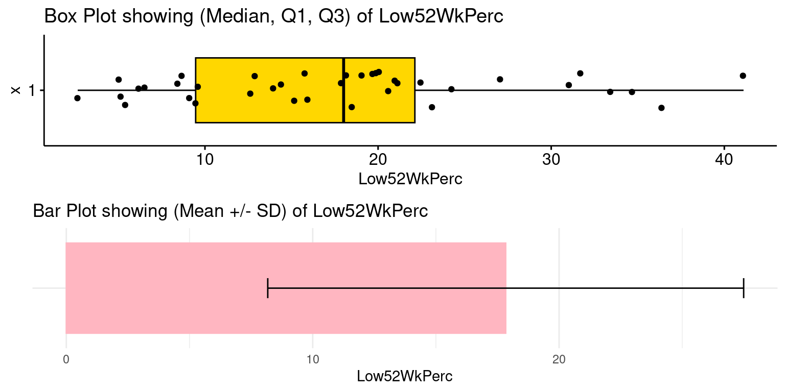
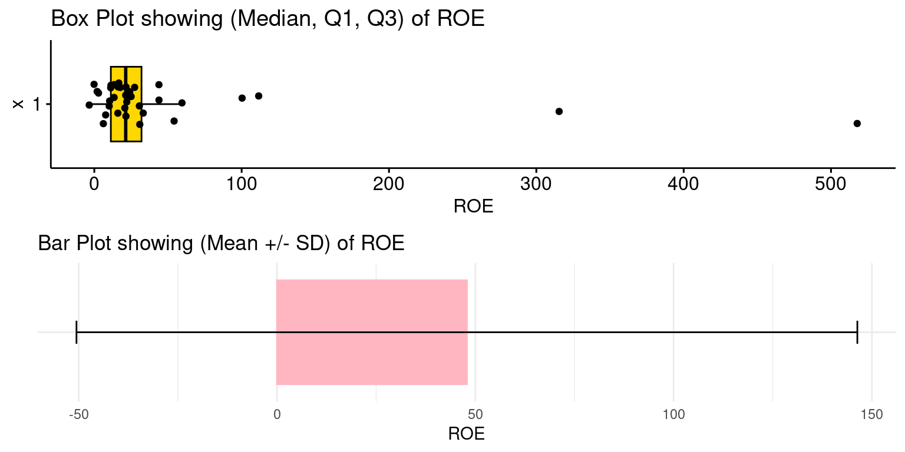
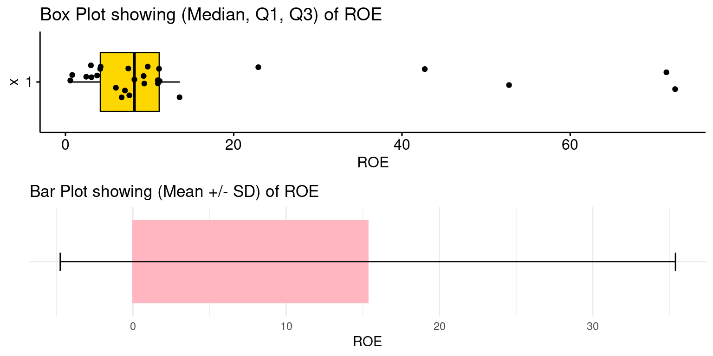

focalSector = "Consumer Staples"Case (2 of 2): S&P500 Sector Analysis
Chapter 18.
Targeted Analysis of a Focal S&P 500 GICS Sector
We are set to conduct a comprehensive analysis focused on a specific GICS sector within the S&P 500. This will involve a close examination of the individual companies comprising the sector we select, allowing us to gain deeper insights into their collective and individual performance dynamics.
Organize the data
For our upcoming analysis, it’s essential to structure and arrange the data effectively, mirroring the methodical approach we successfully implemented in our previous case study
- Load Packages:
# Load the required libraries, suppressing annoying startup messages
library(dplyr, quietly = TRUE, warn.conflicts = FALSE) # For data manipulation
library(tibble, quietly = TRUE, warn.conflicts = FALSE) # For data manipulation
library(ggplot2, quietly = TRUE, warn.conflicts = FALSE) # For data visualization
library(ggpubr, quietly = TRUE, warn.conflicts = FALSE) # For data visualization
library(gsheet, quietly = TRUE, warn.conflicts = FALSE) # For Google Sheets
library(rmarkdown, quietly = TRUE, warn.conflicts = FALSE) # For writing
library(knitr, quietly = TRUE, warn.conflicts = FALSE) # For tables
library(kableExtra, quietly = TRUE, warn.conflicts = FALSE) # For tables
library(scales) # For formatting currency- Read the data from a Google Sheet into a tibble:
# Read S&P500 stock data present in a Google Sheet.
library(gsheet)
prefix <- "https://docs.google.com/spreadsheets/d/"
sheetID <- "14mUlNNpeuV2RouT9MKaAWKUpvjRijzQu40DdWJgyKPQ"
url500 <- paste(prefix,sheetID) # Form the URL to connect to
sp500Data <- gsheet2tbl(url500) # Read it into a tibble called sp500Data- Read GICS classificaiton of S&P 500 stocks:
# Read GICS classificaiton of S&P 500 stocks from a Google Sheet.
library(gsheet)
prefix2 <- "https://docs.google.com/spreadsheets/d/"
sheetID2 <- "1WrVA8dPYvQsc_mXVctgTntRLS02qd7ubzcdAsw03Lgk"
urlgics <- paste(prefix2, sheetID2) # Form the URL to connect to
gics <- gsheet2tbl(urlgics) # Read it into a tibble called gics- Join the data:
# Merging dataframes
sp500 <- merge(sp500Data,
gics ,
id = "Stock")- Rename the data columns:
# Define a mapping of new column names
new_names <- c(
"Stock", "Date", "StockName", "Sector", "Industry",
"MarketCap", "Price", "Low52Wk", "High52Wk",
"ROE", "ROA", "ROIC", "GrossMargin",
"OperatingMargin", "NetMargin", "PE",
"PB", "EVEBITDA", "EBITDA", "EPS",
"EBITDA_YOY", "EBITDA_QYOY", "EPS_YOY",
"EPS_QYOY", "PFCF", "FCF",
"FCF_QYOY", "DebtToEquity", "CurrentRatio",
"QuickRatio", "DividendYield",
"DividendsPerShare_YOY", "PS",
"Revenue_YOY", "Revenue_QYOY", "Rating",
"Security", "GICSSector", "GICSSubIndustry"
)
# Rename the columns using the new_names vector
colnames(sp500) <- new_names- Create new columns to track prices relative to 52-week low and high.
library(dplyr)
sp500 <- sp500 %>%
mutate(Low52WkPerc = round((Price - Low52Wk) * 100 / Low52Wk, 2),
High52WkPerc = round((High52Wk - Price) * 100 / High52Wk, 2),
MarketCapBillions = round(MarketCap / 1e9, 3)
# Convert MarketCap to billions
)- Review the column names:
colnames(sp500) [1] "Stock" "Date" "StockName"
[4] "Sector" "Industry" "MarketCap"
[7] "Price" "Low52Wk" "High52Wk"
[10] "ROE" "ROA" "ROIC"
[13] "GrossMargin" "OperatingMargin" "NetMargin"
[16] "PE" "PB" "EVEBITDA"
[19] "EBITDA" "EPS" "EBITDA_YOY"
[22] "EBITDA_QYOY" "EPS_YOY" "EPS_QYOY"
[25] "PFCF" "FCF" "FCF_QYOY"
[28] "DebtToEquity" "CurrentRatio" "QuickRatio"
[31] "DividendYield" "DividendsPerShare_YOY" "PS"
[34] "Revenue_YOY" "Revenue_QYOY" "Rating"
[37] "Security" "GICSSector" "GICSSubIndustry"
[40] "Low52WkPerc" "High52WkPerc" "MarketCapBillions" - Format the Prices.
library(dplyr)
library(scales) # For formatting currency
sp500 <- sp500 %>%
mutate(
Price = scales::dollar(round(Price, 2)), # format the Price as $
High52Wk = scales::dollar(round(High52Wk, 2)), # format the 52 Week High
Low52Wk = scales::dollar(round(Low52Wk, 2)) # format the 52 Week Low
)- Model the Rating as a
factor()variable.
sp500$Rating <- as.factor(sp500$Rating)
table(sp500$Rating)
Buy Neutral Sell Strong Buy Strong Sell
192 51 178 58 24 - Model
GICSSectoras afactor.
sp500$GICSSector <- as.factor(sp500$GICSSector)
table(sp500$GICSSector)
Communication Services Consumer Discretionary Consumer Staples
22 53 38
Energy Financials Health Care
23 72 64
Industrials Information Technology Materials
78 64 28
Real Estate Utilities
31 30 Analysis
Suppose our mission is to allocate $1 Million to the “best” stock within our focal sector. Which stock should we select?
The Consumer Staples GICS Sector in the S&P500
We focus on investment opportunities within the Consumer Staples GICS Sector in the S&P500. We want to determine the fundamentally strongest AND most reasonably priced shares for medium term investing.
For this purpose, we create a tibble named focalStocks, filtering the shares that belong to the Consumer Staples Sector in the S&P500.
focalStocks = sp500 %>%
filter(GICSSector == focalSector) A) Market Cap
We list the stocks. Specifically, the following code processes data from the focalStocks tibble, specifically for stocks in the focal GICS sector. It sorts these stocks by their market capitalization in descending order and selects columns for stock ticker, company name, market cap (in billions), and stock price.
library(dplyr)
library(kableExtra)
# Select stocks with their Market Cap in billions
focalStocks %>%
arrange(desc(MarketCapBillions)) %>%
select(Stock, StockName, MarketCapBillions, Price) %>%
kable("html",
caption = "GISC Sector Stocks, with Market Cap in Billions") %>%
kable_styling()| Stock | StockName | MarketCapBillions | Price |
|---|---|---|---|
| WMT | Walmart Inc. | 421.765 | $156.74 |
| PG | Procter & Gamble Company (The) | 349.243 | $148.14 |
| COST | Costco Wholesale Corporation | 291.372 | $656.65 |
| KO | Coca-Cola Company (The) | 258.021 | $59.66 |
| PEP | PepsiCo, Inc. | 234.827 | $170.78 |
| PM | Philip Morris International Inc | 148.193 | $95.45 |
| MDLZ | Mondelez International, Inc. | 99.291 | $72.95 |
| MO | Altria Group, Inc. | 73.346 | $41.46 |
| CL | Colgate-Palmolive Company | 65.969 | $80.12 |
| TGT | Target Corporation | 64.845 | $140.34 |
| MNST | Monster Beverage Corporation | 60.044 | $57.72 |
| EL | Estee Lauder Companies, Inc. (The) | 49.247 | $137.62 |
| KHC | The Kraft Heinz Company | 46.339 | $37.78 |
| STZ | Constellation Brands, Inc. | 45.487 | $248.30 |
| KDP | Keurig Dr Pepper Inc. | 44.817 | $32.06 |
| KMB | Kimberly-Clark Corporation | 41.320 | $122.32 |
| KVUE | Kenvue Inc. | 40.224 | $21.00 |
| HSY | The Hershey Company | 38.528 | $188.40 |
| SYY | Sysco Corporation | 38.009 | $75.36 |
| ADM | Archer-Daniels-Midland Company | 37.950 | $71.15 |
| GIS | General Mills, Inc. | 37.174 | $65.43 |
| KR | Kroger Company (The) | 32.888 | $45.72 |
| DG | Dollar General Corporation | 29.601 | $134.86 |
| DLTR | Dollar Tree, Inc. | 29.513 | $135.35 |
| BF.B | Brown Forman Inc | 26.703 | $55.24 |
| CHD | Church & Dwight Company, Inc. | 23.186 | $94.11 |
| WBA | Walgreens Boots Alliance, Inc. | 20.541 | $23.81 |
| K | Kellanova | 19.424 | $56.71 |
| MKC | McCormick & Company, Incorporated | 18.165 | $67.64 |
| CLX | Clorox Company (The) | 17.700 | $142.52 |
| HRL | Hormel Foods Corporation | 17.543 | $32.08 |
| TSN | Tyson Foods, Inc. | 15.523 | $54.21 |
| LW | Lamb Weston Holdings, Inc. | 15.400 | $106.44 |
| BG | Bunge Limited | 14.381 | $98.98 |
| SJM | The J.M. Smucker Company | 13.652 | $128.62 |
| CAG | ConAgra Brands, Inc. | 13.577 | $28.40 |
| TAP | Molson Coors Beverage Company | 13.277 | $61.59 |
| CPB | Campbell Soup Company | 12.894 | $43.24 |
Consider the summary statistics of the Market Capitalization of the focal stocks.
The following code performs a statistical summary of the market capitalization (in billions) of stocks within a specific GICS sector. It calculates various summary statistics: the count of stocks (N), mean, standard deviation (SD), median, first quartile (Q1), third quartile (Q3), minimum (Min), maximum (Max), and total sum (Sum) of market capitalizations. This provides a comprehensive overview of the financial size and spread of the companies in the selected sector.
focalStocks %>% summarise(
N = n(),
Mean = mean(MarketCapBillions),
SD = sd(MarketCapBillions),
Median = median(MarketCapBillions),
Q1 = quantile(MarketCapBillions, 0.25),
Q3 = quantile(MarketCapBillions, 0.75),
Min = min(MarketCapBillions),
Max = max(MarketCapBillions),
Sum = sum(MarketCapBillions)
) %>%
round(2) %>%
kable("html",
caption = "Summary Statistics of Market Cap (Billion USD)") %>%
kable_styling()| N | Mean | SD | Median | Q1 | Q3 | Min | Max | Sum |
|---|---|---|---|---|---|---|---|---|
| 38 | 74.21 | 100.2 | 37.98 | 18.48 | 63.64 | 12.89 | 421.76 | 2819.98 |
As can be seen, the S&P500 GICS sector Consumer Staples consists of 38 stocks. We want to determine the fundamentally strongest and most reasonably priced shares for medium-term investing.
B) Price Attractiveness – Price relative to 52-Week Low
The 52-week low price is an important metric for stocks on major indices like the S&P 500 for several reasons:
Historical Context: It shows the lowest price point of a stock in the past year, providing insights into its price trend.
Investment Opportunity: Stocks near their 52-week low may be seen as undervalued, presenting potential buying opportunities.
Support Level: This price can act as a psychological support level, indicating market valuation and resistance to further decline.
Technical Analysis Tool: For technical analysts, the 52-week low is key for identifying bearish trends or potential recoveries.
Dividend Yield Impact: For dividend stocks, a lower price near this level can mean higher yields, appealing to income-focused investors.
- Caution: Our analysis aims to examine stocks’ prices in relation to their 52-week lows and highs to gauge their relative price attractiveness. It’s crucial to consider the 52-week low alongside other financial indicators, as it alone doesn’t necessarily signify a good buy or sell point.
Recall that a new data column named Low52WkPerc was created, measuring the percentage change between the current price (Price) and its 52-week low (Low52Wk), based on the simple formula: \[Low52WkPerc = \frac{(CurrentPrice - 52WeekLow)*100}{52WeekLow}\]
Similarly, High52WkPerc represents the percentage change between the 52-week high (High52Wk) and the current price (Price). We round off the data to two decimal places for clarity.
Summary Statistics of Price rel. to 52-Week Low (Low52WkPerc)
summaryStats <- focalStocks %>% summarise(
N = n(),
Mean = mean(Low52WkPerc),
SD = sd(Low52WkPerc),
Median = median(Low52WkPerc),
Q1 = quantile(Low52WkPerc, 0.25),
Q3 = quantile(Low52WkPerc, 0.75),
Min = min(Low52WkPerc),
Max = max(Low52WkPerc)
)
Low52WkPercQ1 <- summaryStats$Q1 # Save Q1 of Low52WkPerc
summaryStats %>%
round(2) %>%
kable("html",
caption = "Summary Statistics of Price rel. to 52-Week Low (Low52WkPerc") %>%
kable_styling()| N | Mean | SD | Median | Q1 | Q3 | Min | Max |
|---|---|---|---|---|---|---|---|
| 38 | 17.83 | 9.66 | 18.01 | 9.46 | 22.12 | 2.65 | 41.11 |
Visualizing the distribution of Low52WkPerc
The following code creates two visualizations for the Low52WkPerc data from the focalStocks dataset and combines them into one display. The first is a horizontal box plot (BoxPlot) with additional rug and jitter features for detailed data representation, highlighting median, Q1, and Q3 values. The second is a bar plot (BarPlot) showing the mean value of Low52WkPerc with an error bar representing its standard deviation.

Overall, this code effectively visualizes the distribution and central tendency (mean and standard deviation) of the Low52WkPerc metric from the focalStocks dataset. The combination of a box plot and a bar plot with error bars provides a comprehensive view of the data’s spread and central measure.
Inexpensive Stocks Close to 52-Week Low (Low52WkPerc < Q1(Low52WkPerc))
The following R code snippet identifies and displays a subset of stocks from the focalStocks dataset that are considered ‘inexpensive’ based on their performance relative to their 52-week low. It emphasizes those stocks whose Low52WeekPerc is less than the 25th percentile (Q1) of the distribution within the focal sector.
lowPrice <- focalStocks %>%
select(Stock, StockName, Price, Low52Wk, Low52WkPerc) %>%
filter(Low52WkPerc < Low52WkPercQ1) %>%
arrange(Low52WkPerc)
lowPrice %>%
kable("html",
caption = "Inexpensive Stocks (Low52WkPerc < Q1(Low52WkPerc))") %>%
kable_styling()| Stock | StockName | Price | Low52Wk | Low52WkPerc |
|---|---|---|---|---|
| ADM | Archer-Daniels-Midland Company | $71.15 | $69.31 | 2.65 |
| BF.B | Brown Forman Inc | $55.24 | $52.59 | 5.04 |
| KMB | Kimberly-Clark Corporation | $122.32 | $116.32 | 5.16 |
| HSY | The Hershey Company | $188.40 | $178.82 | 5.36 |
| MO | Altria Group, Inc. | $41.46 | $39.06 | 6.13 |
| HRL | Hormel Foods Corporation | $32.08 | $30.12 | 6.51 |
| GIS | General Mills, Inc. | $65.43 | $60.33 | 8.45 |
| KR | Kroger Company (The) | $45.72 | $42.09 | 8.61 |
| PG | Procter & Gamble Company (The) | $148.14 | $135.83 | 9.06 |
| PM | Philip Morris International Inc | $95.45 | $87.23 | 9.42 |
The filter function is applied to keep only those stocks where Low52WkPerc (the percentage difference from the 52-week low) is less than Low52WkPercQ1 (the first quartile of Low52WkPerc). This implies selecting stocks currently priced closer to their 52-week low than the majority of stocks in the dataset, indicating they are relatively ‘inexpensive’.
In essence, this code is used to identify and showcase stocks within the focalSector that are currently trading near their 52-week low, potentially indicating they are undervalued or at an attractive entry point for investors. This analysis assumes that stocks trading below their 52-week low quartile are considered ‘inexpensive.’
Next, we analyze the Profitability of stocks within the focal sector, as indicated by metrics such as Return on Equity (ROE).
C) Return on Equity (ROE)
We investigate the stocks in the focal sector that have relatively high Return on Equity (ROE). Return on Equity (ROE) is a crucial financial metric used to assess a company’s profitability, specifically measuring how effectively a company uses its equity to generate profits. Here’s why ROE is significant in measuring profitability:
Efficiency Indicator: ROE indicates how well a company is using its shareholders’ equity to generate profit. A higher ROE suggests that the company is more efficient in using its equity base to produce earnings.
Investor Attractiveness: Investors often look at ROE as a sign of a company’s ability to generate profit from equity investments. Companies with consistently high ROE are generally seen as well-managed and potentially more attractive to investors.
Comparative Tool: ROE is used to compare the profitability of companies in the same industry. It levels the playing field by measuring profit relative to shareholder equity, making it a useful tool for comparing companies of different sizes.
Growth Potential: A strong ROE can indicate a company’s potential for growth and its ability to fund expansion without needing additional debt or equity financing. This self-funding capability is especially valuable for investors looking for companies with sustainable growth prospects.
Risk Assessment: While a high ROE can be desirable, it needs to be considered in the context of risk. A very high ROE might indicate excessive leverage or risk-taking. Thus, ROE should be analyzed alongside other financial metrics like debt-to-equity ratio to understand the risk profile of the company.
Performance Benchmark: ROE serves as a performance benchmark. It helps in assessing whether a company is improving its efficiency in using equity to generate profits over time.
Summary Statistics of Return on Equity (ROE)
summaryStats <- focalStocks %>% summarise(
N = n(),
Mean = mean(ROE, na.rm = TRUE),
SD = sd(ROE, na.rm = TRUE),
Median = median(ROE, na.rm = TRUE),
Q1 = quantile(ROE, 0.25, na.rm = TRUE),
Q3 = quantile(ROE, 0.75, na.rm = TRUE),
Min = min(ROE, na.rm = TRUE),
Max = max(ROE, na.rm = TRUE)
)
ROE_Q3 <- summaryStats$Q3
summaryStats %>%
round(2) %>%
kable("html",
caption = "Summary Statistics of Return on Equity (ROE)") %>%
kable_styling()| N | Mean | SD | Median | Q1 | Q3 | Min | Max |
|---|---|---|---|---|---|---|---|
| 38 | 47.88 | 98.44 | 21.32 | 11.22 | 32.04 | -3.43 | 517.78 |
Visualizing the distribution of Return on Equity (ROE)
The following code creates visual representations of the Return on Equity (ROE) for stocks in the focal sector. It includes a BoxPlot that displays the median, first quartile (Q1), and third quartile (Q3), alongside a BarPlot which emphasizes the mean and standard deviation of the ROE. This dual approach offers a comprehensive view of the ROE distribution within the focal sector.

Identifying Stocks that have high ROE (particularly ROE > Q3(ROE))
The following R code identifies and displays a subset of stocks from the focalStocks dataset that have relatively high ROE, filtering stocks whose ROE is more than the 75th percentile (Q3) of the distribution of ROE within the focal sector.
highROE <- focalStocks %>%
select(Stock, StockName, Price, ROE, Low52Wk, Low52WkPerc) %>%
filter(ROE > ROE_Q3) %>%
arrange(desc(ROE))
highROE %>%
kable("html",
caption = "Stocks with ROE > Q3(ROE)") %>%
kable_styling()| Stock | StockName | Price | ROE | Low52Wk | Low52WkPerc |
|---|---|---|---|---|---|
| CL | Colgate-Palmolive Company | $80.12 | 517.78140 | $67.62 | 18.49 |
| KMB | Kimberly-Clark Corporation | $122.32 | 315.48791 | $116.32 | 5.16 |
| SYY | Sysco Corporation | $75.36 | 111.56247 | $62.24 | 21.09 |
| LW | Lamb Weston Holdings, Inc. | $106.44 | 100.29901 | $81.25 | 31.00 |
| CLX | Clorox Company (The) | $142.52 | 59.51557 | $114.68 | 24.27 |
| HSY | The Hershey Company | $188.40 | 54.15166 | $178.82 | 5.36 |
| PEP | PepsiCo, Inc. | $170.78 | 43.88217 | $155.83 | 9.59 |
| KO | Coca-Cola Company (The) | $59.66 | 43.85101 | $51.55 | 15.73 |
| PG | Procter & Gamble Company (The) | $148.14 | 33.20330 | $135.83 | 9.06 |
D) Return on Assets (ROA)
Next, we investigate the stocks in the focal sector that have relatively high Return on Assets (ROA).
Return on Assets (ROA) is a key metric for assessing a company’s profitability, indicating how efficiently a company uses its assets to generate earnings. Key aspects of its significance include:
- Efficiency Indicator: Higher ROA values signify more effective asset utilization to produce profits.
- Comparative Analysis: ROA is useful for comparing profitability across companies with different sizes and industries, as it reflects income generated from all assets.
- Investment Decisions: Investors use ROA to evaluate management efficiency and make informed investment choices.
- Operational Insight: ROA offers a comprehensive view of a company’s operational efficiency by including all assets in its calculation.
- Financial Health: Consistent or improving ROA can signal strengthening financial health and effective operational strategies.
- Risk Assessment: ROA can also indicate potential operational risks, with low values suggesting inefficiencies.
- Growth Sustainability: A stable and robust ROA suggests that a company’s growth is underpinned by efficient asset use.
ROA provides a holistic measure of how well a company leverages its total assets to generate profits, making it a crucial tool for financial analysis and decision-making.
Summary Statistics of Return on Assets (ROA)
summaryStats <- focalStocks %>% summarise(
N = n(),
Mean = mean(ROA, na.rm = TRUE),
SD = sd(ROA, na.rm = TRUE),
Median = median(ROA, na.rm = TRUE),
Q1 = quantile(ROA, 0.25, na.rm = TRUE),
Q3 = quantile(ROA, 0.75, na.rm = TRUE),
Min = min(ROA, na.rm = TRUE),
Max = max(ROA, na.rm = TRUE)
)
ROA_Q3 <- summaryStats$Q3
summaryStats %>%
round(2) %>%
kable("html",
caption = "Summary Statistics of Return on Equity (ROA)") %>%
kable_styling()| N | Mean | SD | Median | Q1 | Q3 | Min | Max |
|---|---|---|---|---|---|---|---|
| 38 | 7.58 | 5.65 | 6.49 | 4.42 | 9.82 | -1.77 | 24.83 |
Visualizing the distribution of Return on Assets (ROA)
Similar to the ROE analysis, the following code creates visual representations of the Return on Assets (ROA) for stocks in the focal sector. It includes a BoxPlot that displays the median, first quartile (Q1), and third quartile (Q3), alongside a BarPlot which emphasizes the mean and standard deviation of the ROA. This dual approach offers a comprehensive view of the ROA distribution within the focal sector.

Identifying Stocks that have high ROA (particularly ROA > Q3(ROA))
Similar to the ROE analysis above, the following R code identifies and displays a subset of stocks from the focalStocks dataset that have relatively high ROA, filtering stocks whose ROA is more than the 75th percentile (Q3) of the distribution of ROA within the focal sector.
highROA <- focalStocks %>%
select(Stock, StockName, Price, ROA, Low52Wk, Low52WkPerc) %>%
filter(ROA > ROA_Q3) %>%
arrange(desc(ROA))
highROA %>%
kable("html",
caption = "Stocks with ROA > Q3(ROA)") %>%
kable_styling()| Stock | StockName | Price | ROA | Low52Wk | Low52WkPerc |
|---|---|---|---|---|---|
| MO | Altria Group, Inc. | $41.46 | 24.83315 | $39.06 | 6.13 |
| LW | Lamb Weston Holdings, Inc. | $106.44 | 19.34928 | $81.25 | 31.00 |
| MNST | Monster Beverage Corporation | $57.72 | 17.87396 | $47.13 | 22.47 |
| HSY | The Hershey Company | $188.40 | 16.76908 | $178.82 | 5.36 |
| PM | Philip Morris International Inc | $95.45 | 15.42009 | $87.23 | 9.42 |
| PG | Procter & Gamble Company (The) | $148.14 | 12.75894 | $135.83 | 9.06 |
| KO | Coca-Cola Company (The) | $59.66 | 11.33602 | $51.55 | 15.73 |
| BF.B | Brown Forman Inc | $55.24 | 10.42293 | $52.59 | 5.04 |
| KMB | Kimberly-Clark Corporation | $122.32 | 10.07174 | $116.32 | 5.16 |
E) ROE versus ROA and colored by Price rel. to 52-Week Low
Next, we visualize the joint distribution of ROE, ROA and Price rel. to 52-Week Low.
The following code creates a scatter plot that visualizes the relationship between ROA and ROE in the focalStocks dataset. It uses color coding based on the Low52WkPerc metric to provide further insights into the stocks’ performance relative to their 52-week lows.
ggscatter(focalStocks,
x = "ROA",
y = "ROE",
color = "Low52WkPerc",
alpha = 0.5,
label = "Stock",
repel = TRUE,
title = "ROE vs ROA, Low52WkPerc") +
gradient_color(c("darkgreen", "red"))
The objective of the provided code is to create a visual analysis of the relationship between Return on Assets (ROA) and Return on Equity (ROE) for stocks within a specific sector (focal sector). The scatter plot, enhanced with color-coding based on each stock’s percentage difference from its 52-week low (Low52WkPerc), aims to reveal how these key profitability metrics interact and are influenced by the stock’s relative position to its 52-week low. By incorporating stock labels and a color gradient, the plot not only maps out the financial performance (ROA and ROE) of these stocks but also integrates their recent price history, offering a multifaceted view of the sector’s financial health and market perception.
F) Investment Insights
Let us review our analysis and generate some insights.
- The following stocks within the focal sector have prices relatively close to their 52-Week low, within Q1 of the distribution of
Low52WkPerc:
lowPrice$Stock [1] "ADM" "BF.B" "KMB" "HSY" "MO" "HRL" "GIS" "KR" "PG" "PM" - The following stocks within the focal sector are highly profitable, having Return on Equity more than the 75th percentile (Q3) of the distribution of the focal sector:
highROE$Stock[1] "CL" "KMB" "SYY" "LW" "CLX" "HSY" "PEP" "KO" "PG" - The following stocks within the focal sector are highly profitable, having Return on Assets more than the 75th percentile (Q3) of the distribution of the focal sector:
highROA$Stock[1] "MO" "LW" "MNST" "HSY" "PM" "PG" "KO" "BF.B" "KMB" - Let us find the intersection between these three sets of stocks
# Find the intersection (common stocks) between the three sets
common_stocks <- intersect(intersect(highROA$Stock, highROE$Stock), lowPrice$Stock)
# View the result
common_stocks[1] "HSY" "PG" "KMB"The following are the stock(s) that are most reasonably priced AND have relatively high Return on Equity and Return on Assets: HSY, PG, KMB
library(dplyr)
# Filter and select specific columns from focalStocks where Stock is in common_stocks
filtered_stocks <- focalStocks %>%
filter(Stock %in% common_stocks) %>%
select(Stock, StockName, ROE, ROA, Price)
# View the result
filtered_stocks %>%
kable("html",
caption = "Most Resonably Priced and Highly Profitable Stocks") %>%
kable_styling()| Stock | StockName | ROE | ROA | Price |
|---|---|---|---|---|
| HSY | The Hershey Company | 54.15166 | 16.76908 | $188.40 |
| KMB | Kimberly-Clark Corporation | 315.48791 | 10.07174 | $122.32 |
| PG | Procter & Gamble Company (The) | 33.20330 | 12.75894 | $148.14 |
Conclusion: The best investment for USD 1 million, is in these stocks that are both reasonably priced and highly profitable.
Summary of Chapter 18 – Case (2 of 2): S&P500 Sector Analysis
Last updated on January 07, 2024, this chapter presents a Case Study of a detailed exploration of the Consumer Staples sector within the S&P 500. This analysis utilizes a range of data manipulation and visualization tools in R, leveraging libraries such as dplyr, tibble, ggplot2, gsheet, and kableExtra. The study begins by meticulously loading and structuring data from Google Sheets into tibbles. This data is then merged, renamed, and enhanced with new metrics for a more insightful analysis.
The study delves into several key areas of analysis for the focal sector. It starts with an examination of market capitalization, sorting stocks by their market cap and generating summary statistics to understand the financial magnitude of these companies. The significance of the 52-week low price is then explored, identifying stocks that are trading near these levels and potentially undervalued. The analysis further extends to profitability measures, particularly Return on Equity (ROE) and Return on Assets (ROA). Through visualizations and data filtering, the chapter highlights stocks that demonstrate high ROE and ROA, signaling their profitability.
An intersection analysis is conducted to identify stocks that are not only close to their 52-week low but also exhibit high profitability. This comprehensive approach pinpoints the most promising investment opportunities in the sector. The study utilizes scatter plots to illustrate the relationships between ROE, ROA, and the percentage change from 52-week lows, providing deeper insights into stock performance and price attractiveness.
In conclusion, the anlaysis identifies the ‘best’ investment options by filtering out stocks that meet both criteria of price attractiveness and high profitability. This rigorous analysis, combining both quantitative measures and visual insights, offers a nuanced perspective on the focal sector, guiding investment decisions based on a blend of market performance and financial metrics.
References
S&P 500
[1] https://www.investopedia.com/terms/s/sp500.asp
[2] S&P Global: S&P Global. (n.d.). S&P 500. Retrieved September 14, 2023, from https://www.spglobal.com/spdji/en/indices/equity/sp-500/
MarketWatch: MarketWatch. (n.d.). S&P 500 Index. Retrieved September 14, 2023, from https://www.marketwatch.com/investing/index/spx
Bloomberg: Bloomberg. (n.d.). S&P 500 Index (SPX:IND). Retrieved September 14, 2023, from https://www.bloomberg.com/quote/SPX:IND
[3] TradingView.com https://www.tradingview.com/screener/
[4] GICS: Global Industry Classification Standard: https://www.spglobal.com/spdji/en/landing/topic/gics/